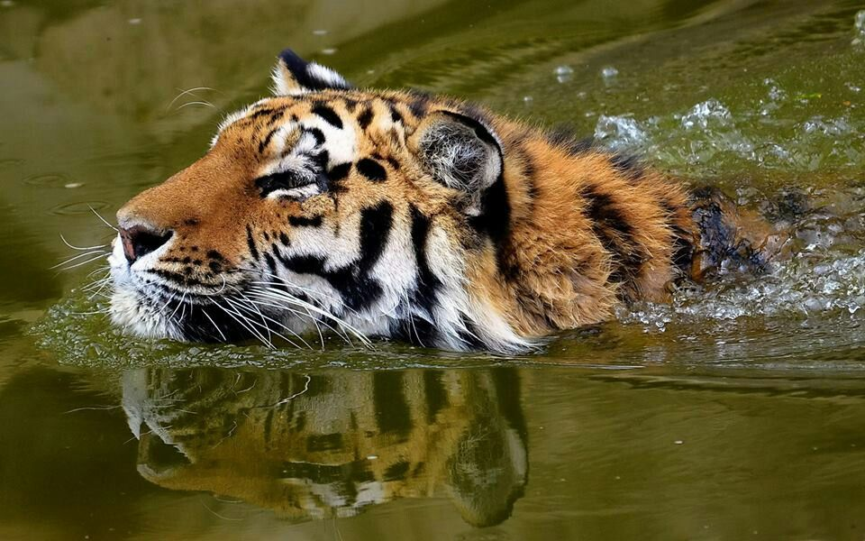

Esta família é morfologicamente bem especializada para a caça, sendo ágeis, flexíveis e habilidosos.
Possuem caninos longos e cônicos para introduzir mais fácil nas suas presas, tendo molares especializados para rasgar, cortar e triturar.
São digitígrados e as suas unhas são retráteis, com a exceção dos guepardos, que possuem garras semi-retráteis, uma adaptação que contribui para que sejam excelentes corredores.
Possuem a língua com papilas salientes que ajudam raspar a carne e retirar dos ossos, durante a alimentação.
Os bigodes são vibrissas, que auxiliam nas informações sensoriais do ar.
Possuem caninos longos e cônicos para introduzir mais fácil nas suas presas, tendo molares especializados para rasgar, cortar e triturar.
São digitígrados e as suas unhas são retráteis, com a exceção dos guepardos, que possuem garras semi-retráteis, uma adaptação que contribui para que sejam excelentes corredores.
Possuem a língua com papilas salientes que ajudam raspar a carne e retirar dos ossos, durante a alimentação.
Os bigodes são vibrissas, que auxiliam nas informações sensoriais do ar.


Tigre no Rio
Na Tabela seguinte estão as familias e subfamilias dos Felinos
| Familia | Subfamilia |
|---|---|